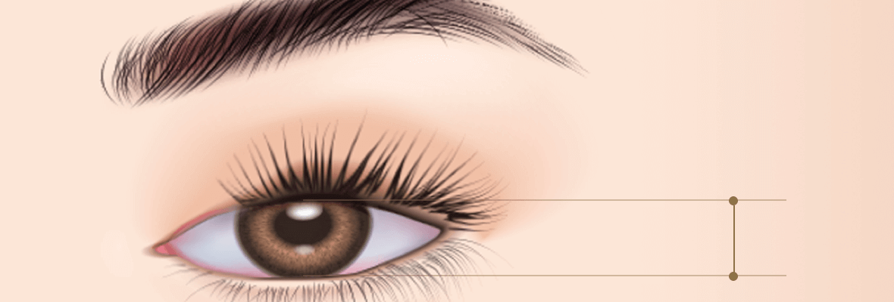

졸려 보이는 눈매
시원하고 또력하게!
#비절개
눈매교정
-

수술 시간
1시간
-

마취방법
수면/국소마취
-

실밥제거
5~7일 후
-

내원치료
2~3회
-

회복기간
5~7일 후
비절개 눈매교정이란?
노화로 인해 눈꺼풀이 눈동자를 많이 가려 졸려보이는 안검하수 증상을 교정하기 위해 절개 없이
1mm 정도의 작은 홈을 내어 눈을 뜨는 근육의 뮬러근 인대를 강화시키는 방법입니다.
빠른 회복과 자연스러운 교정법으로 눈동자 노출이 80-90%까지 증가하여 또렷한 눈매를 가질 수 있습니다.
BEFORE
AFTER
비절개
눈매교정수술 방법
-
1
개개인의 눈매에 맞는
높이와 라인을 디자인합니다. -
2
눈꺼풀에 미세한 구멍을
생성합니다. -
3
근육의 장력을 조절하여
당겨줍니다. -
4
시원한 눈매를 완성합니다.
비절개
눈매교정 핵심포인트
시원하고 또렷한 눈매를 위해 연세자연미는
자세한 상담과 진단을 통해 가장 효과적인 방법으로 수술을 진행합니다.

함께하면좋은 시술
연세자연미성형외과는 개인의 상태에 따른 노화 증상과 원인에 맞는
여러가지 시술들을 복합적으로 진행하는 맞춤형 안티에이징 수술법
으로
자연스럽게 젊어지는 아름다움을 선물해드립니다.